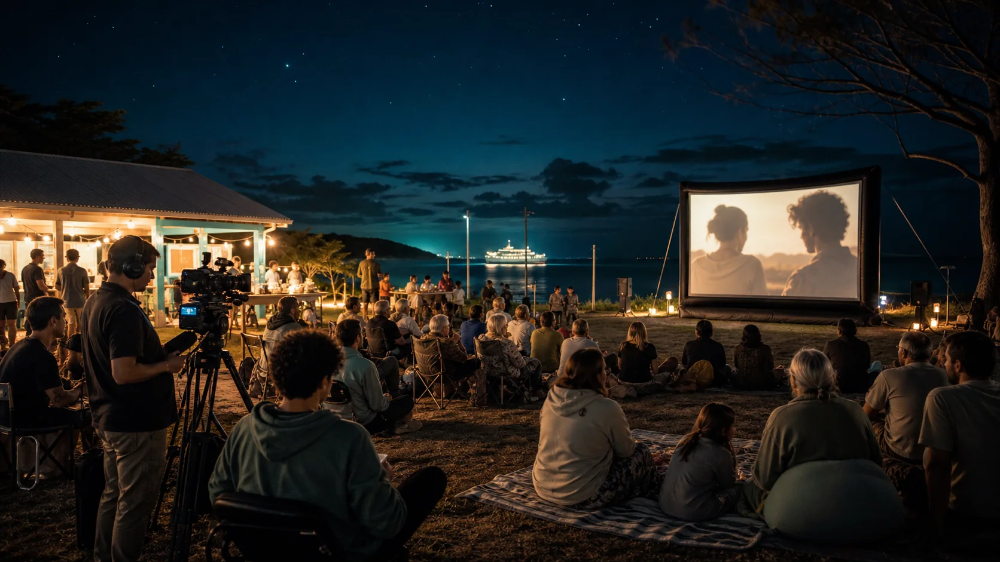

Local shorts
Small works people can understand, enjoy, discuss and improve.

Screen culture
Sport gives movement. Markets bring faces. Outdoor cinema, film club, music clips and festival nights turn that energy into memory, skills and island stories.
Sand and screen
A sand-sport day can become a youth media brief. A night market can become a trader profile. A music set can become a short clip. A local family story can stay private or become public when the people involved want it that way.
Festival pathway
Start with screenings, local shorts, school and youth pathways, documentary practice and strong event craft. When the audience, crew and local support are there, the bigger gala moments have something real underneath them.
Small works people can understand, enjoy, discuss and improve.
Repeatable notes for sources, themes, interviews, run sheets and follow-up actions.
Licensing, accessibility, weather, sound, transport and finish times handled before promotion.
Related public doorway
The Film Club Documentary Builders site carries the detailed workflow, so this hub can stay focused on the public story and point people to the tools when they want them.